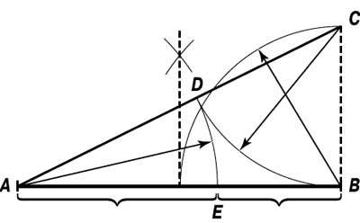
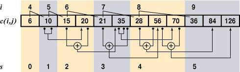

Простейшая (и наименее эффективная) реализация треугольника
Паскаля выполняется в виде рекурсивной процедуры PascalTriangle0. В
ней нужно предусмотреть возврат 1 при условии (i = 0) OR (j = i), а
также возврат i при (i = 1) OR (j = i-1). Эти условия определяют
бедра треугольника и первые внутренние диагонали. В остальных
случаях должно вычисляться выражение
Оно определяет суммирование элементов,
стоящих выше текущего. Неэффективность алгоритма связана с тем, что
чем глубже мы будем спускаться внутрь треугольника, тем больше будет
повторяться вычислений, сделанных уже на предыдущих шагах.
Другим вариантом реализации алгоритма может служить использование
факториала для значений, не превышающих 12 (как мы уже отмечали
выше, это связано с ограничением разрядной сетки). Эту реализацию
разместим в процедуре с именем PascalTriangle1. Здесь при реализации
факториала (но уже не в виде рекурсивной процедуры, а через
импровизированный стек) мы добьемся куда лучших результатов:
Наконец мы вплотную подошли к реализации основного решения, за
которое будет отвечать процедура PascalTriangle2. Обратим внимание
(рис.1) на ту особенность треугольника Паскаля,
что он симметричный, следовательно, вычисления необходимо делать только
для левой его половины.

Рис.1
Далее заметим, что вычислять верхние две диагонали не
нужно — одна состоит из единиц, а лежащая под ней из
последовательности натуральных чисел. Чтобы сократить время
вычислений, имеет смысл вырезать в треугольнике Паскаля значимый
внутренний треугольник и построить процесс определения его
элементов. Для этого нам понадобится ввести понятие сегмента (это
половина строки исходного треугольника Паскаля без первых двух
элементов). Воспользуемся идеей динамического программирования (этот
термин активно используется в области оптимизации). Данный подход
позволяет решать задачу, разбивая ее на подзадачи и объединяя их
решения. Нам необходимо выявить набор значений (для строк от 0 до
31), которые мы вычислим заранее (при загрузке модуля), а
недостающие при запросе будем вычислять отдельно. Этот
«зарезервированный» набор будем хранить в одномерном массиве pas.
Его размер (за это отвечает константа PasCOUNT) при общем количестве
32 строки треугольника вы можете посчитать самостоятельно.
Для адресации элементов треугольника будем использовать индексы i
(номер строки) и j (номер элемента в строке), а для адресации
элементов в сегментах — индексы s (номер сегмента) и t (номер
элемента в сегменте). Первым элементом одномерного массива pas будет
c(4,2). Соответственно связь между индексами выглядит так:
i = s+3;
j = t+2.
Обратим внимание на зависимости при формировании сегментов: они
показаны на рис.2. Реализуем их через процедуру LoadPas (для
преобразования индексов она использует процедуру Segment). Теперь
осталось включить вызов процедуры LoadPas в инициализацию модуля
(процедура On) и для вычисления элементов треугольника Паскаля
написать простейшую процедуру PascalTriangle2, обеспечивающую
обращение к элементам готового массива. Нам еще необходимо доделать
каркас, и задача будет решена (листинг 6).

Рис.2. Треугольник Паскаля в сегментированном массиве
Реализация архитектуры
Теперь, когда у нас каркас с базовыми алгоритмами решения нашей
задачи почти готов, можно дополнить модуль Pascaline полезными
командами вычисления чисел Фибоначчи (листинг
7) и простых чисел (листинг
8). Поскольку особенность алгоритма нахождения простых чисел
связана с тем, что он вычисляет сразу целый набор чисел в заданном
диапазоне, то для доступа к результатам мы можем вопользоваться
таким полезным приемом, как реализация механизма итератора с помощью
классов. Основная его идея (впервые, пожалуй, реализованная в языке
CLU) состоит в том, чтобы объединить список и процедуры доступа к
нему в специальный объект. В нашем случае класс итератора обладает
тремя методами: Init, First и Next. Подобная реализация (листинг
9) удобна на уровне контроллера и внесена в модуль
TriangleTF.
Для проверки эффективности наших альтернативных реализаций
создадим модуль TriangleTst, процедуры которого будут запускаться
после обработки командной строки процедурой TriangleTF.ExecCommand.
В модуле TriangleTst сформируем неоднородный список процедур (листинг
10) с альтернативными реализациями PascalTriangle и Fibonacci и,
последовательно его обрабатывая, будем запускать процедуры с
параметрами, полученными с помощью генератора случайных чисел.
Попутно мы реализовали процедуры вычисления чисел Фибоначчи.
А теперь вернемся к нашей первой задаче об игре в камешки. Она
носит название «фибоначчиев ним» и была предложена Р.Гаскелом и
М.Виниганом (подробное доказательство см.[1], с.552). В одном ее
названии уже таится ключ к разгадке. Да, это числа Фибоначчи.
Упростим условия задачи. Будем считать, что число камешков в
кучке не 1000, а всего 20. Как мы помним, любое натуральное число
можно представить в виде суммы несоседних чисел Фибоначчи
единственным способом: 20 = 13 + 5 + 2 = F7 +
F5 + F3. Последнее слагаемое в таком
разложении и показывает, сколько камешков для победы должен взять
игрок, делающий первый ход. Если второй игрок, скажем, возьмет в
ответ максимально возможное на этом ходу число камешков — 4, то
первому играющему останется вновь разложить оставшиеся 14 камешков в
сумму ряда Фибоначчи (14 = F7 + F2 = 13 + 1) и
взять один камешек. Такая стратегия всегда будет приводить его к
успеху. А вот если число камешков в кучке изначально совпадало бы с
одним из чисел Фибоначчи, то победу одержал бы второй игрок
(проверьте это сами). Теперь нам осталось выяснить, сколько же надо
взять камешков первому игроку, когда общее их число составляет 1000.
Разложим его в сумму ряда Фибоначчи: 1000 = F16 + F7 = 987 + 13.
Итак, первому игроку для победы нужно взять 13 камешков. Попробуйте
сами расширить модуль Pascaline, включив в него процедуру разложения
любого натурального числа в ряд Фибоначчи.
Красота — критерий правильности
Подведем итоги. Построение каркаса отняло у нас значительное
время, однако позволило создать такую архитектуру, которая может
легко наращиваться и при этом оставаться достаточно простой и
прозрачной для понимания и поиска возможных ошибок. Реализация
альтернативных вариантов алгоритмов сняла многие вопросы за счет
проверки на практике их эффективности. К тому же они служили
дополнительным контролем для более сложных в реализации, но зато и
более эффективных алгоритмов. Не менее важно и то, что мы на
конкретном проекте познакомились с механизмами языков Оберон и
Оберон-2, поддерживающих как концепцию ООП, так и концепцию
модульного (компонентного) программирования. Модули стали главными
строительными блоками, а классы ввиду их гибкости и расширяемости
больше всего подошли для уровня контроллера (специального
преобразователя), где требуется соединять разные виды представления
данных и обеспечивать исполнение команд модельного слоя.
Профессор Роберт Флойд, автор одного из первых компиляторов языка
Алгол-60, раскрывая секреты своей творческой лаборатории, заметил:
«После того как поставленная задача решена, я повторно решаю ее с
самого начала, прослеживая и повторяя только суть предыдущего
решения. Я проделываю эту процедуру до тех пор, пока решение не
становится настолько четким и ясным, насколько это для меня
возможно. Затем я ищу общее правило решения аналогичных задач,
которое заставило бы меня подходить к решению поставленной задачи
наиболее эффективным способом с первого раза».
Вы, наверное, уже обратили внимание, что ряд Фибоначчи и
треугольник Паскаля могут реализовываться через рекурсивные
процедуры. Иными словами, их элементы подобны общему. В этом смысле
они вполне подпадают под определение фрактала, предложенное Бенуа
Мандельбротом (1987), который называл этим именем структуру,
состоящую из частей, которые в каком-то смысле подобны целому.
Кстати, относительно недавно в контуре канонического фрактала
Мандельброта обнаружили «лепестки», в точности подчиняющиеся числам
Фибоначчи.
Формируя каркас проекта и решая поставленные задачи, мы
познакомились с одним из возможных стилей программирования.
Разумеется, выбор автора был субъективен, и на практике вам придется
самостоятельно выбирать стиль. Главное, чтобы он помогал строить
понятные и эстетичные программы. Красота не только в математике
служит критерием правильности. Если реализация алгоритмов на языке
программирования выглядит понятно, органично и не вызывает
отторжения, значит, у нее есть все шансы быть правильной.
Литература
- Кнут Д. Искусство программирования, т.1. М.: Вильямс, 2000.
- Виленкин Н.Я. Популярная комбинаторика. М.: Наука, 1975.
- Гарднер М. Математические новеллы. М.: Мир, 2000.
- Ахо А., Хопкрофт Дж., Ульман Дж. Структуры данных и алгоритмы.
М.: Вильямс, 2000.
- Moessenboeck H. Object-Oriented Programming in Oberon-2.
Springer, 1993.
- Гиндикин С.Г. Рассказы о физиках и математиках. М.: МЦНМО,
2001.
Оберон/Оберон-2 и Object Pascal. Десять важных отличий
1. Имена идентификаторов. Ключевые и зарезервированные
идентификаторы записываются заглавными буквами (при просмотре текста
это сразу бросается в глаза и как бы задает каркас программы).
Идентификаторы чувствительны к регистру. Поэтому очень удобно
переменную записывать со строчной буквы, а тип с заглавной,
например, map: Map.
2. Составные операторы. Отсутствие лишних скобок
begin-end. Для составных операторов требуется только завершающая
скобка END: начало определяется самим оператором. Связка BEGIN-END
используется лишь для задания границ процедур и модулей (в теле
инициализации). При этом после END обязательно указывается имя
процедуры/модуля. В операторе IF применяется ступенчатая схема
IF-ELSIF-ELSE, сокращающая избыточную вложенность.
3. Операторы безусловного перехода. Отсутствие оператора
goto и его меток. В случае необходимости оператор goto можно легко
моделировать с помощью универсального цикла LOOP (с выходом из него
по оператору EXIT). Кроме того, имеется оператор HALT, принудительно
останавливающий выполнение программы.
4. Типы данных. Числовые типы задают иерархию, учитываемую
при совместимости типов: LONGREAL і REAL і LONGINT і INTEGER і
SHORTINT. Больший тип поглощает меньший. Для работы со строками
используются массивы литер: ARRAY OF CHAR. Признаком завершения
строки является литера с кодом 0X (до X указывается
шестнадцатизначное значение кода). Все операции над строками, кроме
стандартной процедуры COPY, вынесены в библиотечные модули.
5. Конструкторы типов. Вся индексация массивов ведется с
0: при его описании задается размер, а не диапазон индексов. В
качестве типа для формальных параметров процедур и базового типа для
указателей могут использоваться открытые массивы. Отсутствие типа
«перечисление». Отсутствие вариантных записей. Тип «множество» (SET)
задает только набор целых чисел 0..MAX(SET), зависящий от
платформы.
6. Экспорт-импорт идентификаторов. Области видимости
идентификаторов определяются не блоками, а границами модулей и
процедур. Вместо конструкций unit, interface, uses, отвечающих в
Object Pascal за экспорт-импорт идентификаторов в Обероне/Обероне-2
используется единая конструкция модуля (MODULE с оператором IMPORT,
регламентирующим список импортируемых модулей). Экспорт в Обероне-2
избирательный: если после идентификатора ставится признак «*», то
экспорт полный (поддерживается чтение и запись), если признак «-»,
то экспорт частичный (только чтение). Интерфейс модуля (DEFINITION)
генерируется автоматически по заданным признакам экспорта и
обеспечивает раздельную компиляцию. Имеется механизм локальной
синонимизации имен модулей.
7. Обработка исключений. Отсутствие операторов обработки
исключений. Используются только контрольные вставки ASSERT с
указанием булевого выражения. Если оно ложно, то выполнение
программы в данной точке будет остановлено.
8. Системное программирование. Средства низкоуровневого
программирования (работа с байтами и битами, регистрами, адресами,
обощенными указателями) заключены в псевдомодуле SYSTEM (в
исполняющей системе языка) и его импорт сигнализирует о возможном
появлении проблем переносимости при последующем использовании
импортирующего модуля на других платформах.
9. Наследование. В Обероне/Обероне-2 используется понятие
расширения типа. Расширению подвергается только тип «запись» (как
универсальная конструкция). Это означает, что новый тип может
создаваться с расширением полей своего предшественника (механизм
наследования): новый тип «проецируется» на предшествующий.
10. Классы и объекты. Для объектно-ориентированного
программирования в дополнение к расширению типа добавляются
связанные процедуры (type-bound procedures), играющие роль методов
классов/объектов. С их помощью и благодаря операторам IS и WITH (в
Обероне/Обероне-2 это аналог оператора CASE для разных классов)
обеспечивается полиморфизм. Классы в Обероне/Обероне-2 присутствуют
не в явном виде, а через расширение типов и специальные
процедуры—методы. Динамическое порождение объектов (с помощью NEW, с
размещением в куче и последующей сборкой мусора) и понятие
изменяемого динамического типа (а не вариантного типа, как в Object
Pascal) обеспечиваются указателями в комбинации с расширением типа.
Инкапсуляция реализуется механизмом экспорта-импорта модулей.
Числа Фибоначчи и «золотое сечение»
0, 1, 1, 2, 3, 5, 8, 13, 21 ... — это знаменитая
последовательность чисел Фибоначчи (Fn+2 = Fn
+ Fn+1). Она хорошо известна в связи с так называемой
задачей о кроликах, которую в 1202 г. в работе «Liber Abaci» («Книга
абака») представил великий европейский математик средневековья,
итальянский купец Леонардо Фибоначчи (Пизанский). В соответствии с
ее условиями каждая пара кроликов ежемесячно дает одну пару
приплода, при этом она становится способной к размножению спустя
месяц после появления на свет. Числа Фибоначчи дают ответ на вопрос,
сколько пар кроликов будет всего через 1, 2, 3 и т.д. месяцев.
Леонардо Фибоначчи (1170—1250), будучи купцом, неоднократно
путешествовал по странам Востока и в своей книге использовал труды
арабских математиков (аль-Хорезми, Абу Камила и др.). Числа
Фибоначчи были известны еще индийским ученым, которые анализировали
ритмику стихосложения. Имя итальянца было увековечено в названии
последовательности этих чисел с легкой руки французского математика
Эдуарда Люка, доказавшего благодаря их удивительным свойствам, что
число 2127–1 является простым.
Если посмотреть на отношение соседних чисел Фибоначчи, то можно
заметить, что оно стремится к числу 6=(1+51/2)/ 2 =
1,61803398874989484820... Наиболее замечательное свойствo ряда
Фибоначчи состоит в том, что отношение двух последовательных членов
ряда попеременно то больше, то меньше «золотого сечения».
Соответственно, 6 n-2Fn <= 6 n-1. Евклид
называл число 6 отношением крайнего и среднего (пропорции при
делении отрезка). И по сей день многие архитекторы, скульпторы,
художники, писатели, поэты считают «золотое сечение» наиболее
эстетичным.
«Золотое сечение» было известно архитекторам эпохи Возрождения,
но они применяли его сравнительно редко. Лука Пачоли называл
«золотое сечение» божественной пропорцией. Термин «золотое сечение»
возник в Германии в первой половине XIX в. В XX в. известный
архитектор Ле Корбюзье изобрел модулер — систему двух шкал,
обеспечивающую соблюдение архитектурных пропорций и повторение
однотипных форм. Деления голубой шкалы вдвое крупнее делений красной
шкалы, которая основана на числах Фибоначчи (т. е. на «золотом
сечении»).
Одно из интересных свойств чисел Фибоначчи было открыто в начале
XVII в. Й.Кеплером: Fn+1x Fn-1 –
F2n = (–1)n. Числа Фибоначчи могут
вычисляться не только рекурсивно. В начале XVIII в. Бине вывел
следующую формулу: Fn = ((1+51/2) n+1 –
(1–51/2)n+1) /
(2n+1x51/2). Как мы уже отмечали, числа
Фибоначчи имеют прямую связь с треугольником Паскаля: Fn = Σ
nk=0 Ckn-k. Хорошо
известна теорема Люка, в соответствии с которой некоторое целое
число делит Fm и Fn тогда и только тогда, когда оно является
делителем Fd, где d = gcd(m,n), т. е. d — наибольший общий делитель
m и n. В частности, gcd(Fm,Fn) = Fgcd(m,n) .
Другие интересные свойства чисел Фибоначчи:
1. Если n не является простым числом, то и Fn не является
простым.
2. Σnk=0 Fk =
Fn+2 – 1.
3. F2 n +
F2n+1 = F22n+1.
4.
F2n — F2n-1 = Fn-2 x
Fn+1.
5. Последние цифры чисел Фибоначчи образуют
периодическую последовательность с периодом 60. Две последние цифры
образуют периодическую последовательность с периодом, равным 300.
Для трех последних цифр период равен 1500, для четырех — 15 000, для
пяти — 150 000.
6. Делители чисел Фибоначчи сами образуют ряд
Фибоначчи (каждое третье число делится на 2, каждое четвертое на 3,
каждое пятое на 5, каждое шестое на 8 и т.д.).
7. Каждое число
Фибоначчи, которое является простым (кроме F4 = 3), имеет
простой индекс. Обратное утверждение неверно.
Интересен и тот факт, что с помощью суммы чисел Фибоначчи можно
представлять любое натуральное число. Так что подобно двоичной
системе счисления может использоваться и система счисления
Фибоначчи. Она также записывается в виде последовательности 0 и 1
(стоящих на местах соответствующих чисел Фибоначчи). Таких
представлений может быть несколько, но если мы примем правило,
согласно которому рядом не могут находиться две единицы (их можно
обнулить и перенести в старший разряд), то представление будет
единственным.
Ряд Фибоначчи привлекал внимание математиков своей загадочной
особенностью возникать в самых неожиданных местах. Числа Фибоначчи
эффективно применяются при распределении памяти, при сортировке и
обработке информации, генерировании случайных чисел, в методах
оптимизации, позволяющих находить приближенные значения максимумов и
минимумов сложных функций.